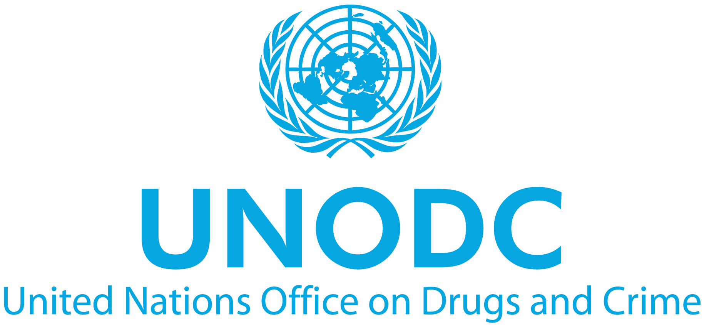

The United Nations Office on Drugs and Crime (UNODC) is a United Nations office that was established in 1997 to assist the UN
in better addressing a coordinated, comprehensive response to the interrelated issues of illicit trafficking in and abuse of drugs,
crime prevention and criminal justice, international terrorism, and political corruption.
Agenda Item #1: Preventing the distribution of fraudulent medicine
Agenda Item #2: Transnational operations of human trafficking
Committee Director: TBA